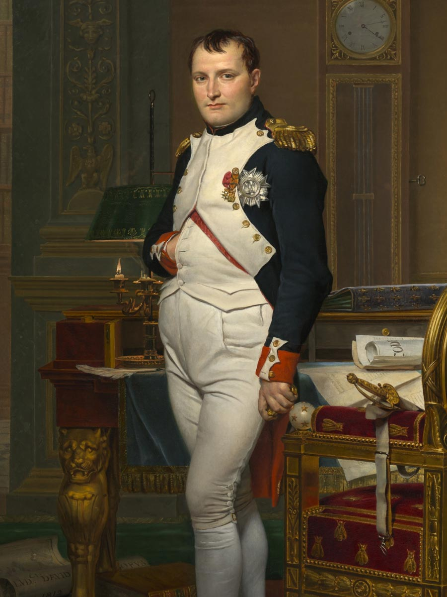
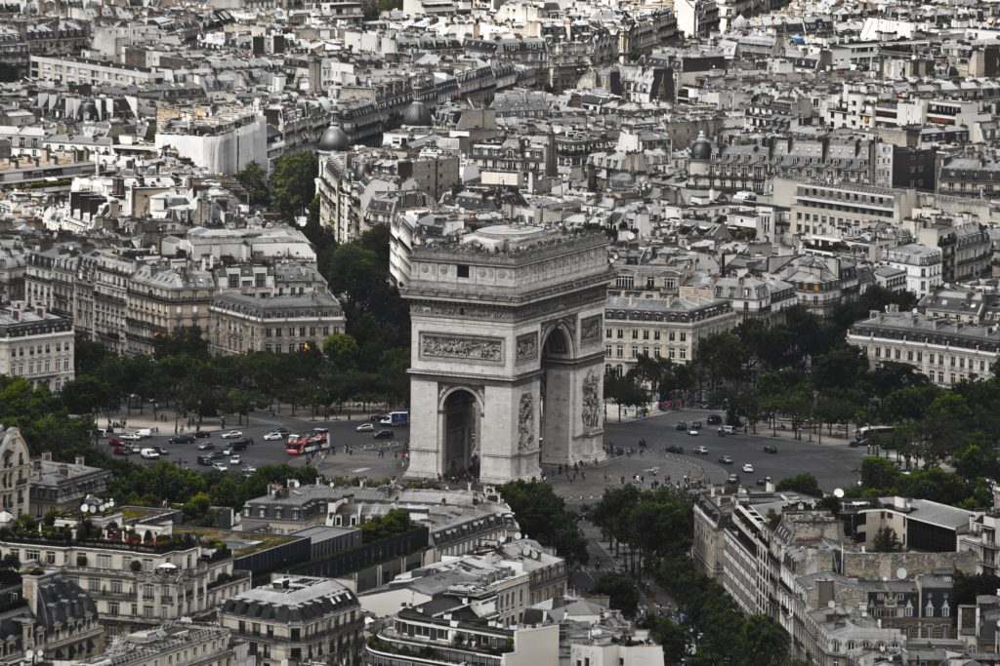
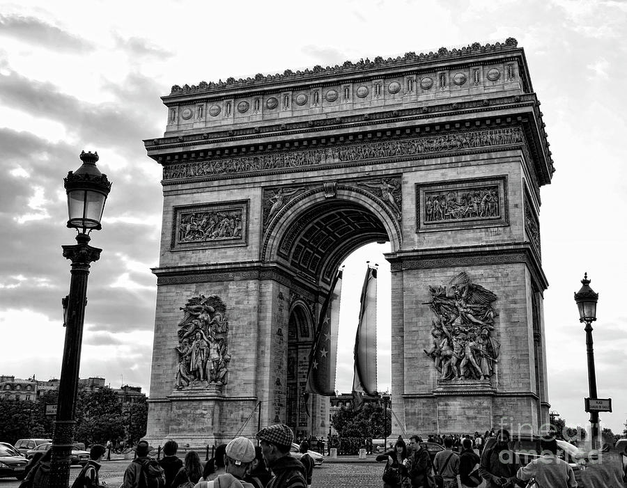
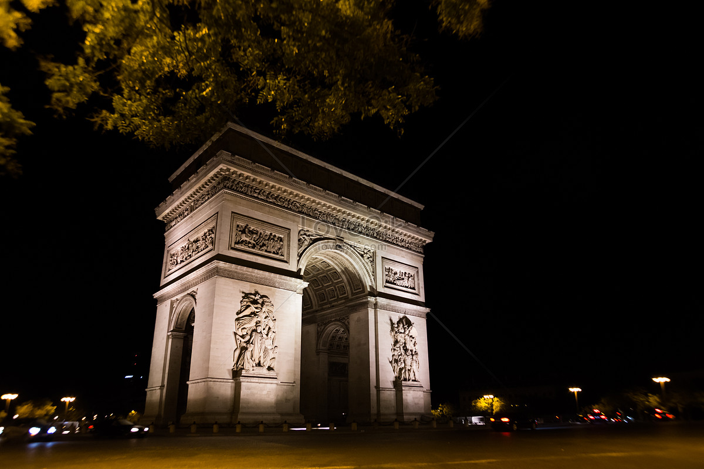
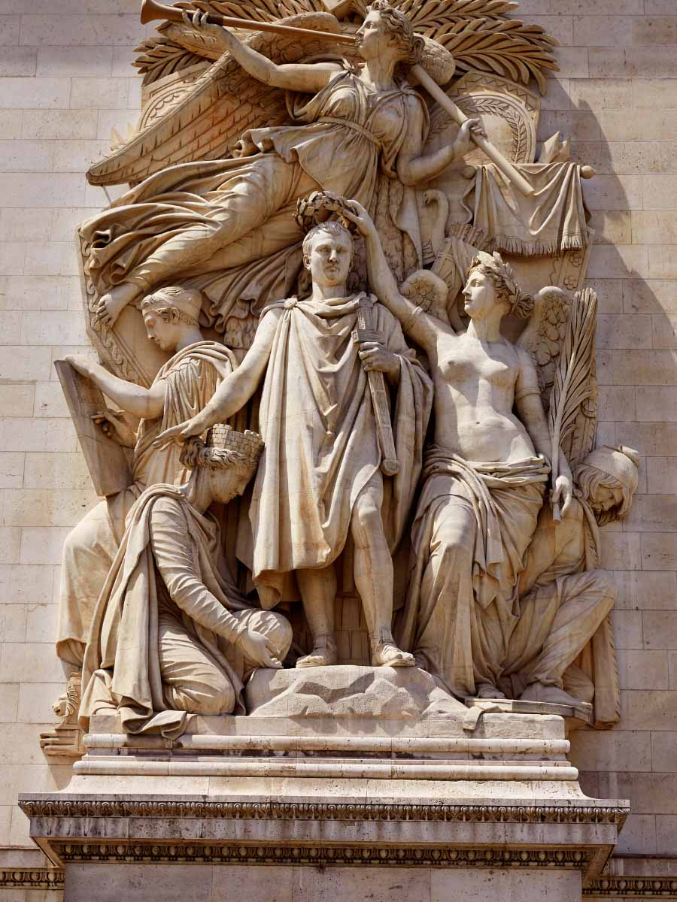
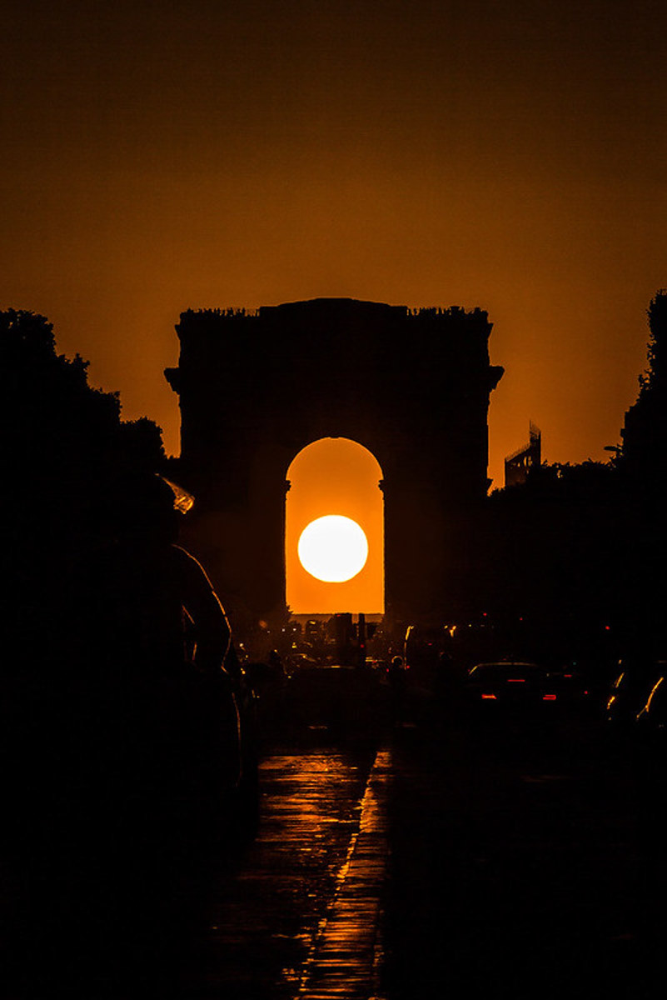

The contraction of the Arc was commissioned by Napoleon on August 15th in 1806. It was his intent to honor the great French army in some way; a force that he deemed invincible considered they had conquered most of Europe. It’s interesting to note that the day its commission was ordered was also Napoleon’s birthday. A secret gift to himself, perhaps?
Prior to talk of the Arc de Triomphe, French architect Charles Ribart had drawn up grand plans to construct a three-tiered elephant in the plaza where the Arc stands today. The elephant would be gigantic and hollow, with staircases leading from the ground up into its gut where there would be elaborate furniture for people to laze around on. Building was just about ready to commence when the French government suddenly changed their minds and denied the petition. Probably for the best, in retrospect.
The Arc de Triomphe was finally completed on 29 July 1836. Unfortunately, it took so long to build that Napoleon I and Jean Chalgrin, its commissioner and original architect, did not live to see it finished. It’s believed that the construction took so long because Napoleon and Chalgrin were overly ambitious with their plan. The arch was so huge that it took more than two years to just lay its foundation. Furthermore, the construction halted in 1814, right after Napoleon abdicated. The project was only resumed in 1823 by King Louis XVIII after the monarchy was reinstated. Throughout all these years, various leaders and architects have overseen the Arc’s construction until it was finally inaugurated on 29 July 1836.
ince the Arc de Triomphe was built to honor the French Army, it’s no surprise that its pillars represent important French victories. The first one is called Departure of the Volunteers of 1792/ Le Départ de 1792 or La Marseillaise which commemorates the uprising that took place on 10 august 1792. Next is The Triumph of 1810/Le Triomphe de 1810, which represents the Treaty of Schönbrunn. The third and fourth pillars are named Resistance/ La Résistance de 1814 and Peace/La Paix de 1815. Resistance commemorates French resistance during the War of the Sixth Coalition, while Peace celebrates the Treaty of Paris in 1815.
Still on the topic of the arch’s pillars, did you know that they were not the work of one designer? They were actually designed by three people and made by multiple sculptor groups. The Departure of the Volunteers of 1792/ Le Départ de 1792, or La Marseillaise, was designed by François Rude. Meanwhile, the Triumph of 1810/ Le Triomphe de 1810 was the work of Jean-Pierre Cortot. Lastly, Resistance/ La Résistance de 1814 and Peace / La Paix de 1815 were both designed by Antoine Étex.
If you time your visit to the Arc de Triomphe perfectly, you may be able to witness a breathtaking sight. Twice a year, the sun sets in the exact center of the arch. This wonderful phenomenon usually occurs between May and August; however, the exact date may vary. To admire it in its full glory, just extend to the Eastern end of the Champs-Élysées.
